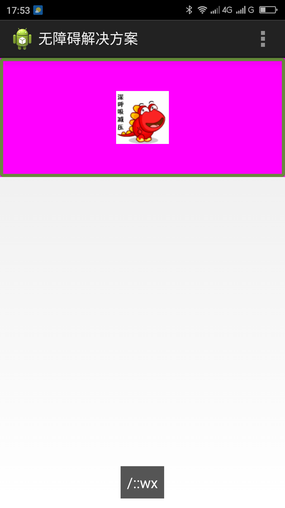
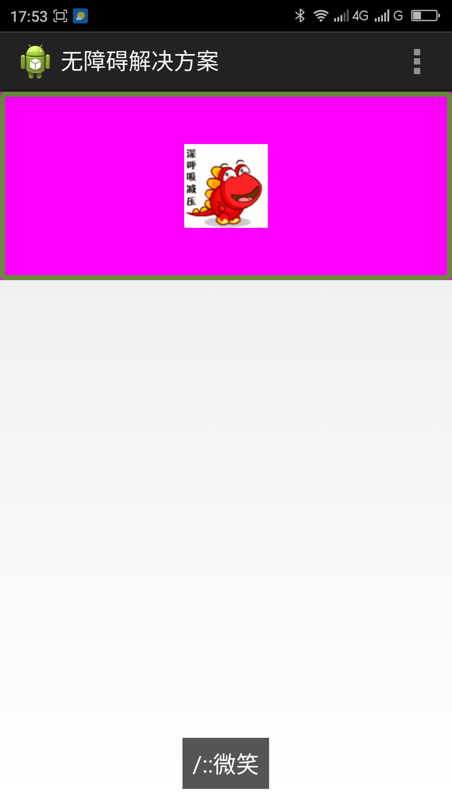

返回
当表情展示的时候朗读为一串用户无法理解的字符串，如：“/：：wx”。用户无法通过这串字符串知道展示或输入的是什么表情。
注：已正则表达式替代方式展示表情的方法见此解决方案的“附“。
把要用正则表达式替代为表情的字符串定义为表情的名称，如“微笑”表情的字符串定义为：“/::微笑“，这样定义之后读屏会朗读为”微笑“（注：一般情况下符号是被读屏忽略不朗读出来的，所以朗读内容是：“微笑“），用户就知道此表情是”微笑“表情。
|  |  |
| 优化前，屏幕阅读器朗读为“wx” | 优化后，屏幕阅读器朗读为“微笑” |
在EditText（编辑框）展示表情的时候此种解决方案也试用。
已正则表达式替代方式展示表情